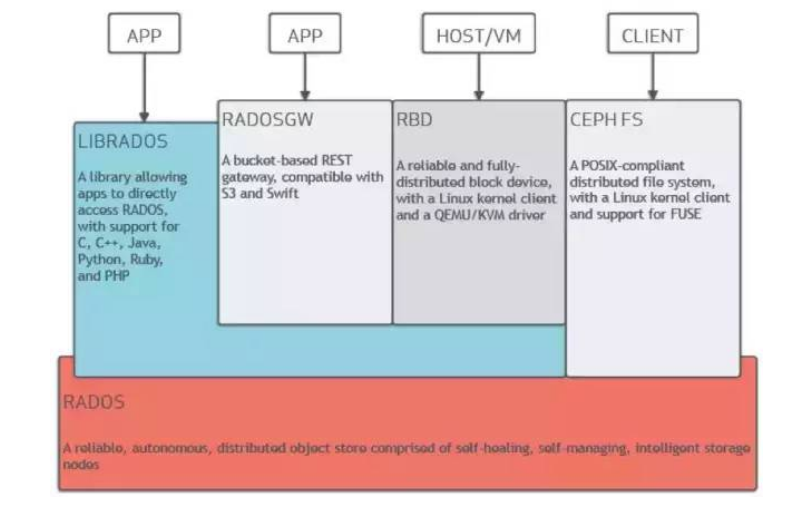
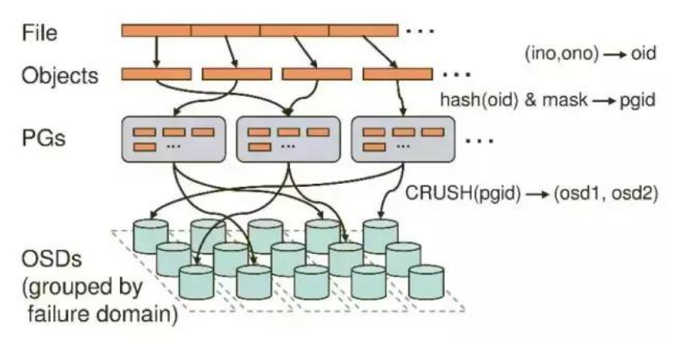
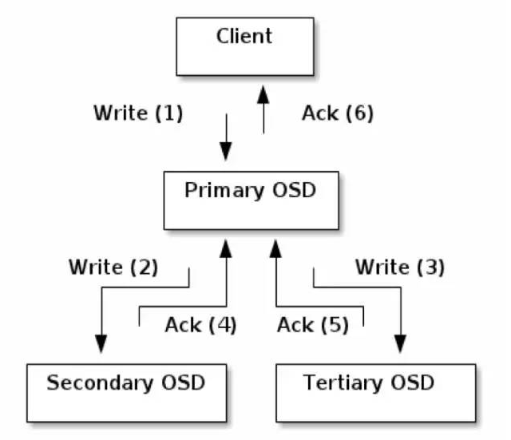

分布式存储系统 Ceph
你了解Ceph吗？
Ceph是一种分布式存储系统，它可以将多台服务器组成一个超大集群，把这些机器中的磁盘资源整合到一块儿，形成一个大的资源池（PB级别），然后按需分配给应用使用。
那么你知道Ceph的架构吗？

Ceph的底层实现是RADOS，RADOS是由C++写的，但是它向外界暴露了调用接口，即LibRADOS,应用程序只需要调用LibRADOS的接口，就可以操纵Ceph了。这其中，RADOS GW用于对象存储，RBD用于块存储，它们都属于LibRADOS;CephFS是内核态程序，向外界提供了POSIX接口，用户可以通过客户端直接挂载使用。
你知道RADOS内部架构和工作原理吗？

每台服务器都有好几块磁盘（sda,sdb,sdc等），磁盘又可以进一步分区（sda1,sda2等）。CEPH中最基本的进程就是OSD(对象存储设备)，每个磁盘对应一个OSD。
如果用户通过客户端想要存储一个文件，那么在RADOS中，该文件实际上会分为一个个4M块大小的对象。每个文件都一个文件ID(例如A),那么这些对象的ID就是（A0,A1,A2等）。然而在分布式储存系统中，有成千上万个对象，光遍历就要花很长的时间，所以对象会先通过hash-取模运算，存放到一个PG（Place Group）中，PG相当于数据库中的索引（PG的数量是固定的，不会随着OSD的增加或者删除而改变），这样一来，只需要首先定位到PG的位置，然后在PG中查询对象即可，大大提高了查询的效率。之后，PG中的对象又会根据设置的副本数量进行复制，并根据Crush算法存储到OSD节点上。
你知道CEPH的进程还有哪些吗？
CEPH中的Monitor（至少有3个）用于维护和监控整个集群的状态，每个Monitor都有一个Cluster Map，只要有这个Map，就能够清楚知道每个对象存储在什么位置了。客户端会先tcp连接到Monitor，从中获取Cluster Map，并在客户端进行计算，当知道对象的位置后，再直接与OSD通信（去中心化的思想）。OSD节点平常会向Monitor节点发送简单心跳，只有当添加、删除或者出现异常状况时，才会自动上报信息给Monitor。
MDS是可选的，只有需要使用CEPH FS的时候才需要配置MDS节点。在ceph中，元数据也是存放在OSD中的，MDS只相当于元数据的缓存服务器。
在Ceph中，如果要写数据，只能向主OSD写，然后再由主OSD向从OSD同步地写，只有当从OSD返回结果给主OSD后，主OSD才会向客户端报告写入完成的消息。如果要读数据，不会使用读写分离，而是也需要先向主OSD发请求，以保证数据的强一致性。
